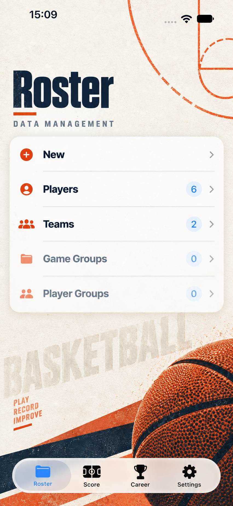
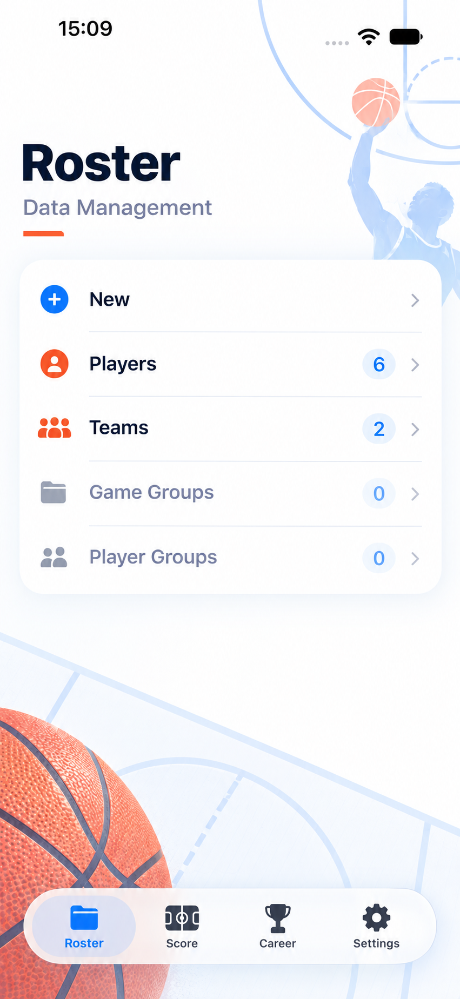
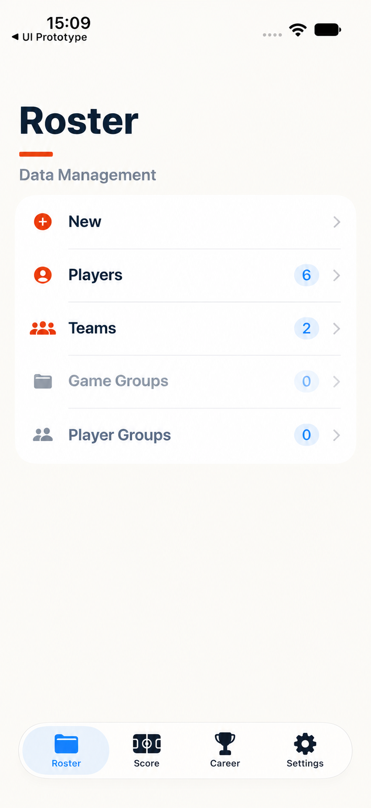

三套视觉风格候选
基准：现有 App 的管理页真实截图；参考：App Store 中文截图的纸张、运动、蓝橙强调和卡片语言。三套图都要求保留当前行顺序、数据数量、箭头和底部导航，只改变视觉风格。

暖米白、深海军蓝、橙色标线、轻纸张纹理；运动海报感最强，适合延续 App Store 截图的品牌气质。

白底、浅蓝几何、蓝色主强调、珊瑚橙点缀；信息更清楚，适合数据密集页面。

无插画、无照片、弱阴影、细分隔线和少量橙色；最接近系统原生，迁移 SwiftUI 风险最低。
共同约束
- 保留现有页面结构、导航路径、开关、列表、计数和数据展示，不重做交互。
- 不触碰记分页。
- 不改变现有存储数据结构；如需球队 logo，只作为非持久化展示字段候选。
- 不带版本号，不直接上传 App Store Connect。
请你选择
回复 A、B 或 C 即可；也可以回复组合方案，例如“以 A 的色彩为主，但采用 C 的无插画和克制布局”。你选择前，我不会继续生成产品 SwiftUI 代码。